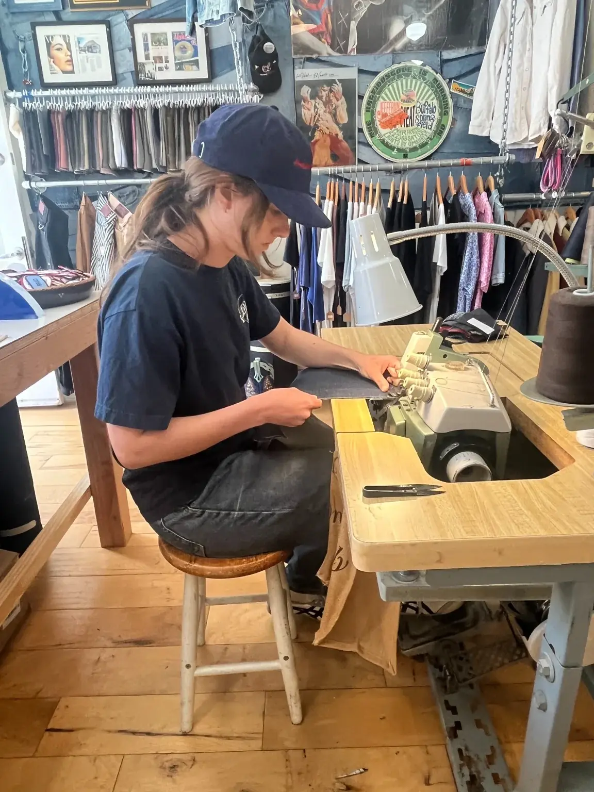
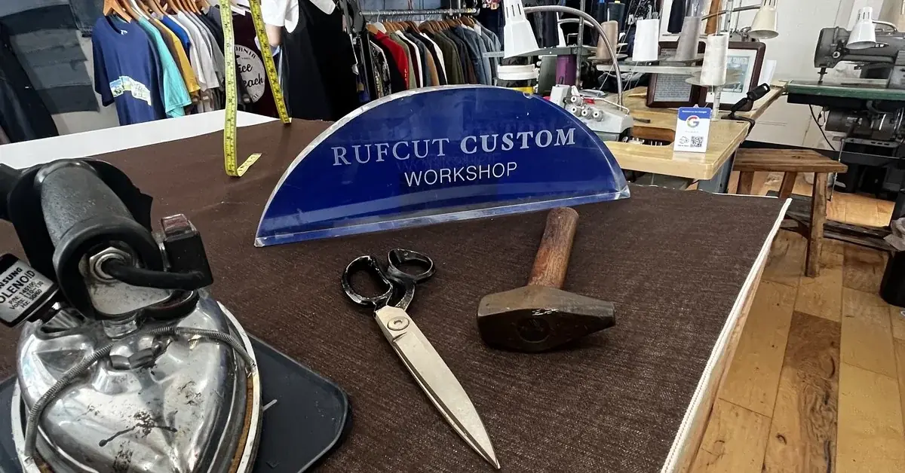

Cut in Venice
Your fit.Cut for you.3 to 5 days.
Most denim sites look like a catalog. Rufcut is a bench, a machine and a pair of hands. Build a pair below, or walk in at 517 Ocean Front Walk.

The heart of the site
The jeans builder
Someone on the boardwalk or across the country builds a pair in minutes. Every choice shows on the drawing.
Design preview. Final fit is confirmed at your fitting.
Fit:
Denim:
Wash:
Thread:
Fly:
Hem:
powered by mrspace
Not in Venice? Send us your measurements and we’ll plan your pair with you.

Built online.
Cut on the boardwalk.
Come in for a fitting, bring your old pair, or just watch the machine run.
Visit the benchService list
Repairs
Bring it in or drop it at the shop. Choose the garment, mark the work, and send your work order directly to us.
powered by mrspace
Track a repair
Enter your ticket number to check your repair.
- ReceivedWork order at the shop
- In progressBeing worked on
- FinishingExpected tomorrow
- ReadyAvailable for pickup
- CompletePicked up or shipped
Vintage Levi's
One of a kind, one of each. Filter by waist, clothing size, model and era.